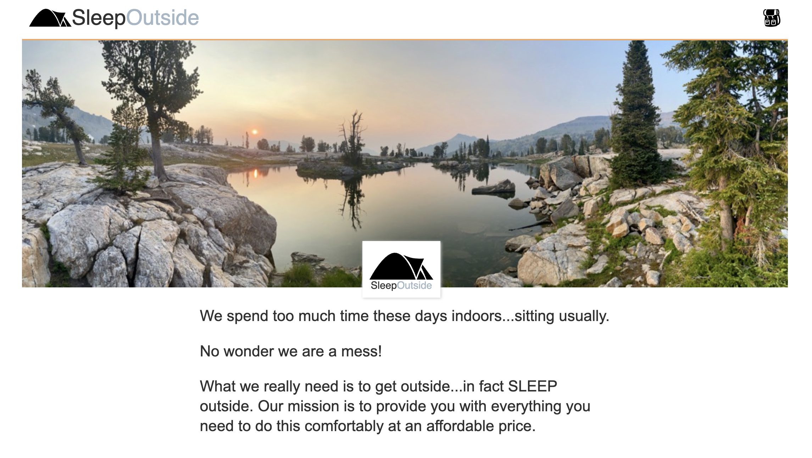

Welcome to my
PORTFOLIO
Valeria Bisso
Software Engineering - Full Stack Web Developemnt
Hi, I'm Valeria!
Hi, I'm Valeria!
Welcome to my corner of the web! I’m a Front-End Developer with a
love for UI/UX design and bringing ideas to life with clean,
modern code. I’m all about making the internet a more
user-friendly and beautiful place, one line of code at a time.
When
I’m not working on my latest project, you might catch me outside
with a good book or experimenting with new ways to entertain my
cat!
Here are a few things you should know about me:
You can download my latest resume here.
-
 Island Park Expeditions
Island Park ExpeditionsIsland Park Expeditions is a responsive web application designed and built to showcase rental services for outdoor adventures. The project leverages modern web development tools and practices to create a user-friendly experience for customers exploring rental options. Some of the key features are interactive booking system using JavaScript modules for dynamic functionality, fully responsive design with HTML and CSS to ensure accessibility across all devices.
-
SleepOutside
The SleepOutside web application was developed as part of a Web Frontend Development II team project. This collaborative effort serves as a foundation for building a fully-functional web app. The project utilizes Vite, ensuring efficient asset bundling, and leverages modern web development tools such as npm and JavaScript modules. Team members collaborated seamlessly using Git to manage version control and contributions, making it a valuable learning experience in teamwork and modern web practices.
-
-
Love Calculator
The Love Calculator is a playful and interactive web application designed to calculate the compatibility between two individuals based on their names. Built with React, Vite, and Bootstrap, this project was created as a fun way to refine my React skills while exploring creative web development concepts.
-
 Miami Chamber of Commerce
Miami Chamber of CommerceThe Miami Chamber of Commerce website is a dynamic, user-centered web application designed to serve both local businesses and visitors by offering valuable information and resources. It features a fun and responsive design built with HTML and CSS. It includes weather information integration using an external API to provide real-time, location-specific updates for Miami. Interactive and functional forms powered by JavaScript to simplify user input and data collection. Utilization of JSON files for efficient data management.